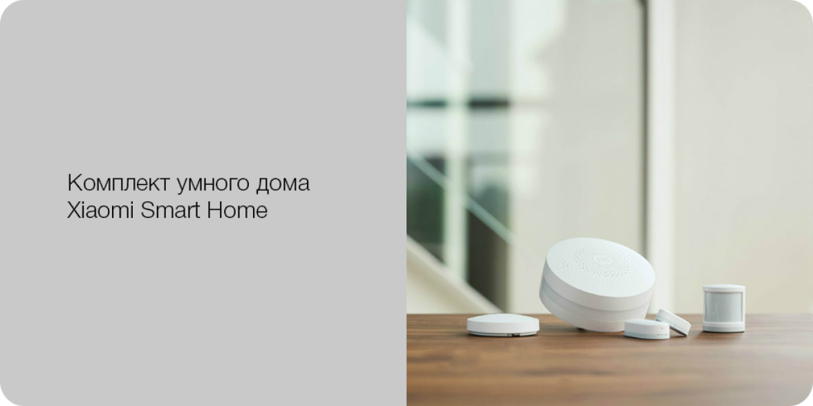

- 
- Комплект поставки
-
Поставляется набор в традиционной для Xiaomi картонной коробке с минималистическим оформлением. Сама коробка небольшая — около 21×11×7 сантиметров (на самом деле, можно было бы сделать ее еще меньше), картон крепкий, есть специальная вставка для надежного крепления всех элементов.
В набор входят несколько устройств: мост, датчик открытия окна или двери, датчик движения и беспроводная кнопка. Дополнительно в коробке есть ключ для открытия корпусов для замены батареек, второй комплект элементов крепления из двухсторонней клейкой ленты и краткая инструкция. Все это упаковано в конверт из тонкого картона, на котором есть визуальное описание возможностей системы.
Продукт рассчитан на эксплуатацию в помещении при температуре от −5 до +40 градусов и относительной влажности до 95%.

- Внешний вид и конструкция
-
Центральный шлюз представляет собой изготовленную из белого матового пластика толстую «шайбу» диаметром восемь сантиметров. Высота устройства составляет 37 мм, но из-за использования китайского варианта вилки отечественным пользователям придется подключать ее через переходник, так что в реальности места может потребоваться больше.
По ребру идет полоска матового полупрозрачного пластика, за которой установлены многоцветные светодиоды. Они работают как индикатор для реализации функций оповещения и подсветки. Здесь же есть кнопка, выполняющая несколько функций: включение и выключение подсветки, включение и выключение режима охраны, подключение к контроллеру новых устройств.
За решеткой на передней стороне корпуса находится динамик. Его громкости может быть достаточно и для квартиры. Здесь же за решеткой есть и датчик освещенности — автоматическая подсветка в режиме ночника работает только в темноте.
- Датчики
-
В отличие от моста, датчики работают от батарей, заряда которых хватит на два года. Для связи их со шлюзом используется протокол ZigBee. В городских условиях на открытом пространстве дальность работы составляет 25-30 метров для всех трех сенсоров.
Датчик открытия двери или окна состоит из двух частей и работает с герконом и магнитом. Размеры корпусов изготовленных из белого матового пластика очень невелики — основной блок 21×41×11 мм, вспомогательный — 10×26×9 мм. Небольшой вес позволил Xiaomi предложить вариант крепления на двухсторонние клейкие полоски специальной формы.
Питание датчика осуществляется от одной батареи CR1632. На корпусе устройства можно заметить два отверстия — за расположенным на верхней крышке скрывается индикаторный светодиод, а на торце — кнопка для сопряжения датчика со шлюзом. Расстояние срабатывания - 22 мм.

- Датчик движения
-
Датчик движения тоже поражает своими размерами — он представляет собой цилиндр диаметром 30 миллиметров и высотой 33 миллиметра. Основная часть корпуса также использует белый матовый пластик. На передней части находится закрытое матовой пленкой окошко сенсора. Слева от него — скрытая кнопка для подключения к базовому блоку.
Предполагается, что датчик будет просто стоять на полке или другой горизонтальной поверхности. Для этого у него на дне есть резиновое кольцо, но в комплекте идет и круг из двухсторонней клейкой ленты.
Питание осуществляется от одного элемента формата CR2450. Он устанавливается под съемным дном корпуса. Дальность работы датчика составляет до семи метров при установке на высоте около двух метров. Горизонтальный угол обзора — 170 градусов.

- Кнопка управления
-
Последний элемент комплекта — беспроводная кнопка. В отличие от двух предыдущих датчиков, здесь Xiaomi не стала увлекаться миниатюризацией (диаметр — около 50 мм, высота — примерно 14 мм), что правильно с точки зрения удобства работы. Корпус у кнопки также из белого матового пластика.
На дне установлена наклейка для крепления, а также есть скрытая кнопка и индикатор сопряжения. Дно снимается для установки элемента питания CR2032. Поддерживается определение одиночного и двойного нажатия на кнопку.

- Возможности и использование
-
Вся работа с системой осуществляется через уже знакомое нам фирменное мобильное приложение Mi Home. Никаких вариантов доступа через браузер или программы для ПК не нужно. Кроме того, обязательно иметь аккаунт Xiaomi, к которому привязываются все устройства (создать его можно и из мобильной утилиты), также эта программа используется и для обновления встроенного в устройства программного обеспечения. Кроме того, очень удобно, что программа способна работать и удаленно без каких-либо настроек роутеров и другого сетевого оборудования. Эта возможность обеспечивается фирменными облачными сервисами Xiaomi.